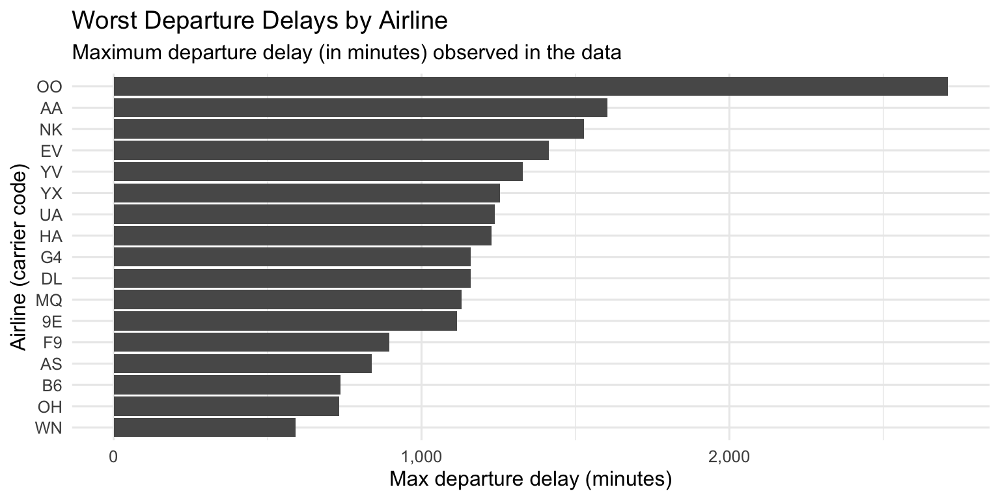
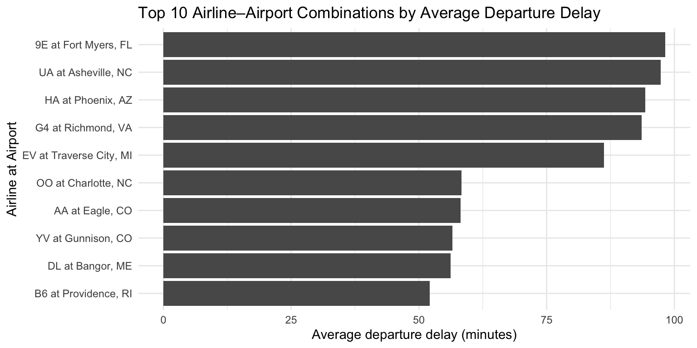
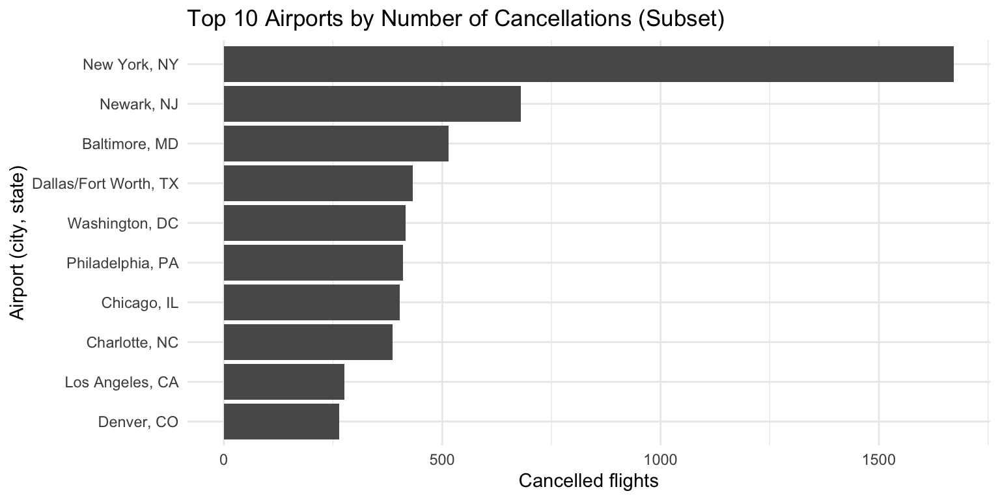

In this project, we will be using SQL to summarize a month of U.S. flight activity and then build visualizations using R to answer:
Which airlines suffer the worst delays?
How do flight volumes vary across days of the week?
Which airports are delay and cancellation “hot spots”?
How do daily flight counts evolve over time?
Air travel demand is highly uneven across the week, a small number of carriers and airports experience extreme delays, and cancellations are concentrated at major hubs where disruptions ripple through the entire network.
2 2. Loading Data
Our SQL outputs already summarize the raw flights table, but some of the CSVs may include header rows or artifacts. We’ll clean those up here.
Code
# Q1: Max departure delay by airlineq1_clean <- q1 |> dplyr::filter(airline !="Reporting_Airline")# Q2: Max early departure minutes by airlineq2_clean <- q2 |> dplyr::filter(airline !="Reporting_Airline")# Q3: Flights by day of week (drop any NA / artifact row)q3_clean <- q3 |> dplyr::filter(!is.na(day_name)) |> dplyr::mutate(# Use the rank from SQL to order bars from busiest to least busyday_name = forcats::fct_reorder(day_name, day_rank) )# Q4: Worst airport by average departure delay (already filtered in SQL)q4 <- q4# Q5: Airline + airport combinations with high average departure delaysq5_clean <- q5# Q6: Total number of cancelled flights in the periodtotal_cancelled <- q6$num_cancelled_flights[1]# Q6b: per-airport cancelled flights with reason code# A = Carrier, B = Weather, C = National Airspace System (NAS)q6b_clean <- q6b# Q7: Daily flight counts and 3-day moving averageq7_clean <- q7 |> dplyr::filter(FlightDate !="FlightDate") |> dplyr::mutate(FlightDate = lubridate::ymd(FlightDate) )
3 3. Airline Extremes: Who Has the Worst Delays?
3.1 3.1 Maximum departure delay by airline
Code
q1_clean |>ggplot(aes(x =reorder(airline, max_dep_delay),y = max_dep_delay)) +geom_col() +coord_flip() +labs(title ="Worst Departure Delays by Airline",subtitle ="Maximum departure delay (in minutes) observed in the data",x ="Airline (carrier code)",y ="Max departure delay (minutes)" ) +scale_y_continuous(labels = scales::comma) +theme_minimal(base_size =12)

# A tibble: 5 × 2
airline max_dep_delay
<chr> <dbl>
1 OO 2710
2 AA 1603
3 NK 1527
4 EV 1413
5 YV 1330
Narrative:
Some carriers have extreme worst-case delays of many hours.
Even if these are rare events, they highlight how a single severely delayed flight can cascade into missed connections and schedule disruptions.
3.2 3.2 Early departures: who leaves too soon?
Code
q2_clean |>ggplot(aes(x =reorder(airline, max_early_departure_minutes),y = max_early_departure_minutes)) +geom_col() +coord_flip() +labs(title ="Maximum Early Departures by Airline",subtitle ="How early the earliest flight left, by airline",x ="Airline (carrier code)",y ="Max early departure (minutes)" ) +theme_minimal(base_size =12)
# A tibble: 5 × 2
airline max_early_departure_minutes
<chr> <dbl>
1 OO 47
2 AS 36
3 OH 35
4 WN 35
5 EV 34
Narrative:
The same carriers that show large delays can also leave substantially early.
Early departures still matter: passengers arriving “on time” can miss flights if they board early.
##4. When Do We Fly? Day-of-Week Flight Patterns
Code
q3_clean |>ggplot(aes(x = day_name, y = num_flights)) +geom_col() +labs(title ="Total Flights by Day of Week",subtitle ="Busiest to least busy days based on SQL flight counts",x ="Day of week",y ="Number of flights" ) +scale_y_continuous(labels = scales::comma) +theme_minimal(base_size =12)
# A tibble: 10 × 4
airline airport_name airport_code avg_dep_delay
<chr> <chr> <chr> <dbl>
1 9E Fort Myers, FL RSW 98.2
2 UA Asheville, NC AVL 97.3
3 HA Phoenix, AZ PHX 94.3
4 G4 Richmond, VA RIC 93.6
5 EV Traverse City, MI TVC 86.2
6 OO Charlotte, NC CLT 58.4
7 AA Eagle, CO EGE 58.2
8 YV Gunnison, CO GUC 56.6
9 DL Bangor, ME BGR 56.2
10 B6 Providence, RI PVD 52.1
Code
q5_top10 |> dplyr::mutate(label =paste(airline, "at", airport_name),label = forcats::fct_reorder(label, avg_dep_delay) ) |>ggplot(aes(x = label, y = avg_dep_delay)) +geom_col() +coord_flip() +labs(title ="Top 10 Airline–Airport Combinations by Average Departure Delay",x ="Airline at Airport",y ="Average departure delay (minutes)" ) +theme_minimal(base_size =11)

Narrative:
Some combinations have average delays around or above an hour, suggesting systematic route-level issues, not just random noise.
5 6. Cancellations: How Often and Why?
5.1 6.1 Overall cancellations
Code
total_cancelled
[1] 22166
There are 2.2166^{4} cancelled flights in this period.
# A tibble: 10 × 2
airport_name total_cancelled
<chr> <dbl>
1 New York, NY 1672
2 Newark, NJ 680
3 Baltimore, MD 514
4 Dallas/Fort Worth, TX 432
5 Washington, DC 416
6 Philadelphia, PA 410
7 Chicago, IL 402
8 Charlotte, NC 386
9 Los Angeles, CA 276
10 Denver, CO 264
Code
canc_by_airport |> dplyr::mutate(airport_name = forcats::fct_reorder(airport_name, total_cancelled)) |>ggplot(aes(x = airport_name, y = total_cancelled)) +geom_col() +coord_flip() +labs(title ="Top 10 Airports by Number of Cancellations (Subset)",x ="Airport (city, state)",y ="Cancelled flights" ) +theme_minimal(base_size =11)

Narrative:
Major hubs dominate the cancellation counts in this subset.
This concentration means disruptions at a few airports can impact passengers nationwide.
Narrative:
The solid line captures day-to-day variation, while the dashed line shows the underlying trend.
Combined with the day-of-week patterns, this helps airports and airlines anticipate peaks and valleys in demand.
6 8. Why This Story Matters
Delays and cancellations are not random; they are concentrated in specific carriers, routes, and airports.
Demand is uneven across the week and across days, which should guide staffing and capacity decisions.
By combining SQL summaries and visual storytelling in Quarto, we turn raw flight data into actionable insight for operations, policy, and passenger experience.